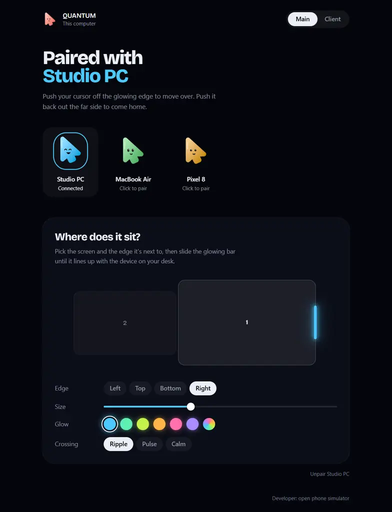

Bezel Portal
Mark the stretch of your screen edge where the other device sits. Push into the glow to cross, push out its far side to come home.
Push your cursor through a glowing edge and it lands on the computer next to it. Keyboard included.
Windows · macOS · open source
LOKA turns the edge of your screen into a door. No hardware switch, no cables, no account.
Mark the stretch of your screen edge where the other device sits. Push into the glow to cross, push out its far side to come home.
Type and it goes wherever the cursor is. Ctrl+Alt+Esc always brings everything back.
Drag a file into the glow and let go. It lands in Downloads on the other device, never overwriting anything.
Devices on your network find each other. Click one, confirm on the other, done.
Pick the colour of the portal. The whole app follows it. Then choose how a crossing feels: Ripple, Pulse or Calm. Try one:


A cursor, the one thing that actually travels between your screens. Every device gets its own Tuju, and its face tells you what's going on.